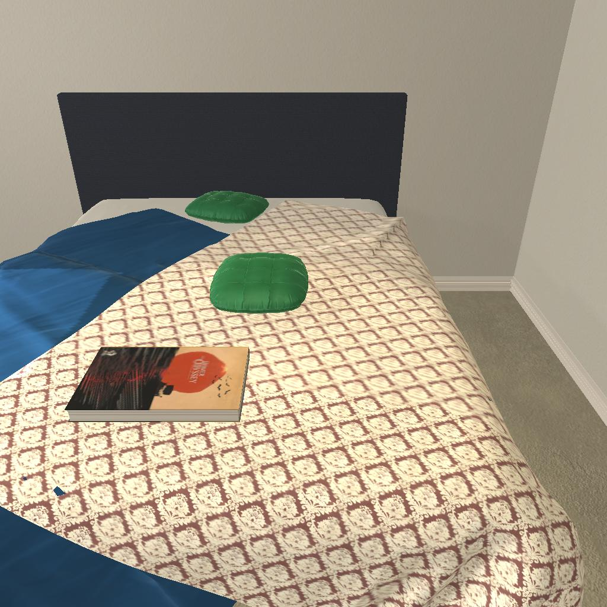

---------------------------------------------------------task: 1---------------------------------------------------------
--------------------------------------------------------------------------------------------------------------------------------------------------------------------
--------------------------------------------------------------------------------------------------------------------------------------------------------------------
Step:--------------------------------------------------------------------------5-------------------------------------------------------------------------------
----------------------------------------
VLM Prompt:
**Task**
Please perform as an embodied AI agent. Our final objective is to look at alarmclock under the desklamp. Below is the plan for completing the task, the current observation, alongside historical data and admissible actions for the next step. Please determine the best action for the next step!
**Plan**
Below is a detailed step-by-step plan to complete the task.
1. Find an alarm clock.
2. Pick up the alarm clock.
3. Find a desk lamp.
4. Turn on the desk lamp.
5. Position the alarm clock under the desk lamp.
6. Look at the alarm clock under the light of the desk lamp.
**Current Observation**
Displayed is an image capturing the current position of the agent.
**History Information**
Displayed are the previous observations with their corresponding actions.
State 0:
No history.
State 1:
1. Step Index in the Plan: 1
2. Objects: Dresser, CD, Figurine, Bookshelf, Books, Black Object (potential cup)
3. Action: go to drawer 1
State 2:
1. Step Index in the Plan: Unknown (task is to find an alarm clock)
2. Objects: Dresser, Alarm Clock, Desk Lamp, Laptop, Small Pink Object (resembling a cup), CD
3. Action: go to dresser 1
State 3:
1. Step Index in the Plan: 2
2. Objects: Dresser, Laptop, CD, Keychain, Credit Card, Alarm Clock (not visible but known to be present)
3. Action: take alarm clock 1 from dresser 1
State 4:
1. Step Index in the Plan: 3
2. Objects: Desk Lamp, Alarm Clock (previously picked up), Laptop, Dresser
3. Action: use desklamp 1
State 5:
1. Step Index in the Plan: 4
2. Objects: Desk Lamp (already turned on), Alarm Clock (picked up)
3. Action: go to bed 1
**Admissible Actions**
(1): go to dresser 1
(2): go to drawer 1
(3): go to drawer 2
(4): go to drawer 3
(5): go to drawer 4
(6): go to drawer 5
(7): go to garbagecan 1
(8): go to drawer 6
(9): go to drawer 7
(10): go to drawer 8
(11): go to drawer 9
(12): go to drawer 10
(13): go to shelf 1
(14): go to shelf 2
(15): go to shelf 3
(16): go to shelf 4
(17): go to shelf 5
(18): go to shelf 6
(19): go to shelf 7
(20): take book 1 from bed 1
(21): take pillow 1 from bed 1
(22): take pillow 2 from bed 1
**Analysis Guideline**
1. Analyze the history and current observation, and then determine our current step in the plan and our current place.
2. List all visible objects related to the task in the current observation, without summarizing any as "various items."
3. Analyze the objects in the current observation based on the history and the requirements for the current step, and then determine if we can complete the step with the current observation.
4. Analyze and decide on the most appropriate action to take.
5. Summarize the analysis using the following format: "Analysis: [The summarization of the analysis], The Most Appropriate Action: (i which is the integer.): [Selected action]"
**Notes**
1. We must complete each step of the plan in order and cannot skip steps when the previous ones are not finished.
2. For "Go to" actions listed as "go to xxx [n]", interpret this as there are n distinct actions available: "go to xxx 1", "go to xxx 2", ..., "go to xxx n". Select one specific action from these options instead of using "go to xxx [n]".
3. If receptacles such as drawers, cabinets, and so forth are closed in the current observation, we may try to open them.
4. Pay attention to synonyms and ensure clarity in the terms used.
5. We must determine and provide the single action which must be in the **Admissible Actions**.
6. If there is no history available, we are at the first step and the current place is "Unknown".
**Answer**
Please select the most suitable action by following the **Analysis Guideline**, keeping the above **Notes** in mind.
----------------------------------------
----------------------------------------
VLM Response:
Analysis: Based on the history provided, we have already completed steps 1 through 4 of the plan. The agent has found the alarm clock, picked it up, found the desk lamp, and turned it on. The action taken in State 5 was to go to bed 1, which is consistent with moving towards completing step 5 of the plan. The current observation shows the agent's current position, which appears to be at bed 1, as indicated by the presence of pillows and a book on the bed. No alarm clock is visible in the current observation; however, the history confirms that the alarm clock has been picked up and is in the agent's possession. Therefore, we can presume the alarm clock is with the agent even though it's not visible in the image. The next step in the plan is to position the alarm clock under the desk lamp. Since the desk lamp has already been turned on and we're at the bed (the previous action was to go to bed 1), it seems we're ready to position the alarm clock under the light of the desk lamp.
None of the admissible actions directly relate to positioning the alarm clock under the desk lamp. However, since the agent is at the bed and likely holding the alarm clock, the next logical step would be to place the alarm clock on the bed under the desk lamp if the lamp is within reach. Since this specific action is not available in the admissible actions, we must choose the best available action that could indirectly allow us to complete the current step. There is no action listed that involves interacting with the alarm clock or the desk lamp, so we must choose an action that could potentially allow us to interact with the desk lamp in the next turn.
The Most Appropriate Action: (20): take book 1 from bed 1
This action is selected with the intention of clearing the space on the bed, potentially making room for the alarm clock to be positioned under the desk lamp in a subsequent action. Since the alarm clock is not visible in the image, we cannot directly place it under the lamp, but by taking an item from the bed, we might be preparing the space for the alarm clock to be positioned properly.
----------------------------------------
----------------------------------------
>>> Refine VLM Response and Get Pure Action: take book 1 from bed 1
This action is selected with the intention of clearing the space on the bed, potentially making room for the alarm clock to be positioned under the desk lamp in a subsequent action
----------------------------------------
-----------------------------------------------------------------
Running time: 25.017186880111694 seconds
Total Money: 0
-----------------------------------------------------------------
-----------------------------------------------------------------
Summarization Prompt:
**Context**
Analysis: Since there is no history information, we are at the first step in the plan, which is to find a statue. The current place is unknown. In the current observation, we see a floorlamp next to an armchair with a small table that has a small object on it, which could potentially be the statue we are looking for. Since the plan requires us to find a statue first and it appears there might be one on the table next to the armchair, we should investigate this object to determine if it is the statue we need.
The Most Appropriate Action: (1): go to armchair 1
**Summary**
1. Step Index in the Plan: 1
2. Objects: Floorlamp, Armchair, Small Table, Small Object (potential statue)
3. Action: go to armchair 1
**Context**
Analysis: Based on the history provided, we have already completed steps 1 through 4 of the plan. The agent has found the alarm clock, picked it up, found the desk lamp, and turned it on. The action taken in State 5 was to go to bed 1, which is consistent with moving towards completing step 5 of the plan. The current observation shows the agent's current position, which appears to be at bed 1, as indicated by the presence of pillows and a book on the bed. No alarm clock is visible in the current observation; however, the history confirms that the alarm clock has been picked up and is in the agent's possession. Therefore, we can presume the alarm clock is with the agent even though it's not visible in the image. The next step in the plan is to position the alarm clock under the desk lamp. Since the desk lamp has already been turned on and we're at the bed (the previous action was to go to bed 1), it seems we're ready to position the alarm clock under the light of the desk lamp.
None of the admissible actions directly relate to positioning the alarm clock under the desk lamp. However, since the agent is at the bed and likely holding the alarm clock, the next logical step would be to place the alarm clock on the bed under the desk lamp if the lamp is within reach. Since this specific action is not available in the admissible actions, we must choose the best available action that could indirectly allow us to complete the current step. There is no action listed that involves interacting with the alarm clock or the desk lamp, so we must choose an action that could potentially allow us to interact with the desk lamp in the next turn.
The Most Appropriate Action: (20): take book 1 from bed 1
This action is selected with the intention of clearing the space on the bed, potentially making room for the alarm clock to be positioned under the desk lamp in a subsequent action. Since the alarm clock is not visible in the image, we cannot directly place it under the lamp, but by taking an item from the bed, we might be preparing the space for the alarm clock to be positioned properly.
Please summarize the context by following above examples when providing the summary, and ensure that only the summary is included, without any extra explanation.
**Summary**
-----------------------------------------------------------------
-----------------------------------------------------------------
Summarization Response:
1. Step Index in the Plan: 5
2. Objects: Bed, Pillows, Book (on the bed), Alarm Clock (in possession but not visible)
3. Action: take book 1 from bed 1
-----------------------------------------------------------------
-----------------------------------------------------------------
Text Observation:You pick up the book 1 from the subsequent action.
-----------------------------------------------------------------
UNSUCCEED